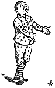
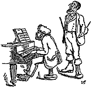
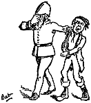
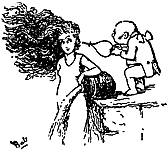
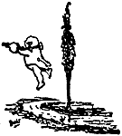

|
|||||||
In 1890 Gilbert collected together several lyrics from the operas he had written with Sullivan and published them under the title "Songs of a Savoyard", illustrating them with line drawings. In 1897 The Bab Ballads, with which are included Songs of a Savoyard — a collection of all the Bab Ballads which had previously been published in book form, along with lyrics from Songs of a Savoyard, plus some post-1890 lyrics — was issued with mainly new drawings.
These drawings may be used to illustrate programmes or other publicity material without permission. Click on the song title to download a high resolution file suitable for printing.
Thanks to Diana Burleigh for identifying the drawings.
 |
 |
 |
|
| An Appeal (Oh! is there not one maiden breast) |
The Modern Major General (I am the very model of a modern Major-General)* |
The Policeman's Lot (When a felon's not engaged in his employment) |
The Policeman's Lot (When a felon's not engaged in his employment) |


 |
 |
| The Fickle Breeze (Sighing softly to the river) |
The Fickle Breeze (Sighing softly to the river) |


Page modified 15 August 2011